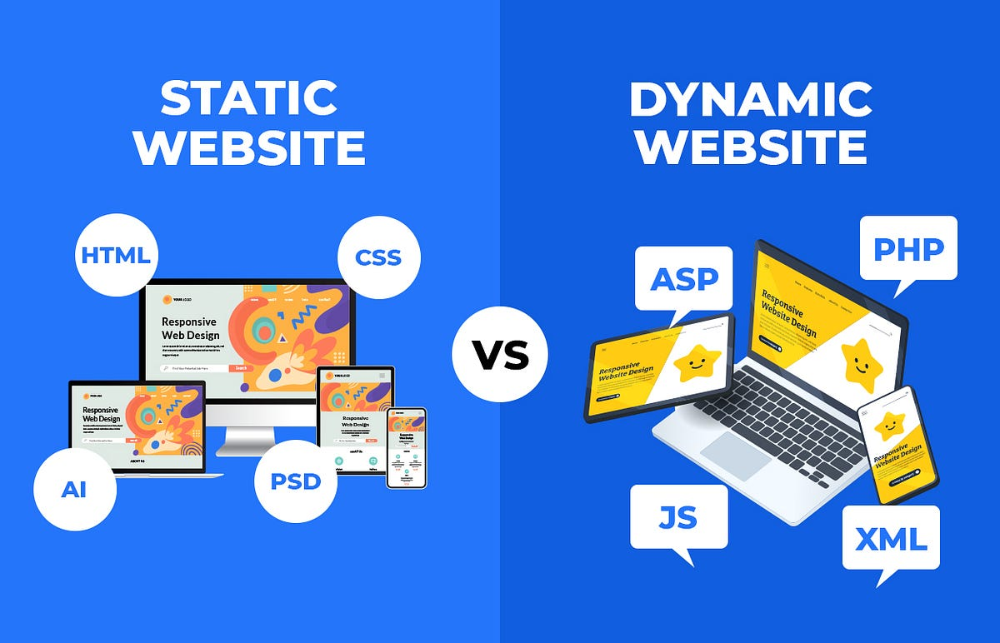
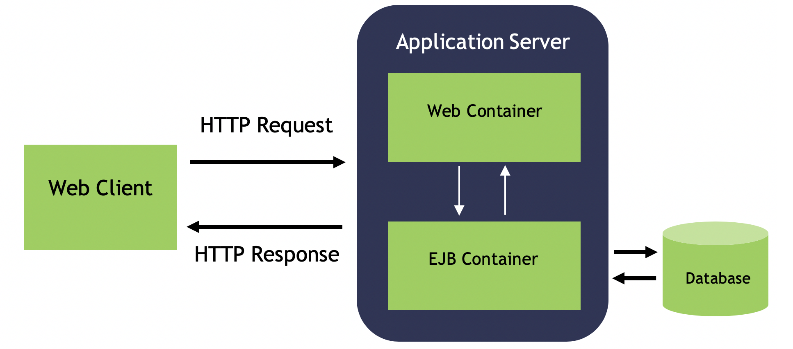

client/server
The client-server model is a fundamental network architecture where clients request services or resources from servers, which then provide them. This model is widely used in various applications, from web browsing to email, and forms the basis of many modern computing systems.
Here's a breakdown of the client-server model:
1. Client:
A client is a computer or software application that requests resources or services from a server.
Examples include web browsers, email clients, and applications that access data from a central database.
Clients initiate the communication by sending requests to the server.
2. Server:
A server is a computer or software that provides resources and services to clients.
Servers can handle various tasks, such as serving web pages, storing data, managing email, or providing access to applications.
Servers listen for client requests and respond accordingly.
3. Communication:
The client-server model typically uses a request-response pattern for communication.
The client sends a request to the server, and the server processes the request and sends back a response.
This communication can happen over a local network or the internet.
4. Key Characteristics:
- Centralized Resource Management:
Servers manage resources and services, making them easily accessible to clients.
- Scalability:
Client-server systems can be scaled by adding more clients or servers as needed.
- Security:
Servers can implement security measures to control access to resources and protect data.
- Efficiency:
Clients can focus on their tasks while the server handles resource-intensive operations.
5. Examples:
- Web Browsing:
A web browser (client) requests a website from a web server, which then sends back the website's content.
- Email:
An email client (client) sends an email to an email server, which then delivers it to the recipient's email server.
- Database Access:
An application (client) connects to a database server (server) to retrieve or update data.
In essence, the client-server model provides a structured way for clients to access and utilize resources and services offered by powerful, centralized servers. This model is crucial for the functioning of many modern applications and networks.
components of web application

Web applications, at their core, consist of interconnected components working together to deliver functionality to users. These components can be broadly categorized into three main layers:
1. Presentation Layer (Frontend/Client-side):
This is the part of the application that users directly interact with through their web browser.
It's responsible for displaying the user interface and handling user input.
Key technologies include:
- HTML (HyperText Markup Language): Provides the structure and content of web pages.
- CSS (Cascading Style Sheets): Controls the visual presentation and styling of the HTML elements.
- JavaScript: Enables dynamic and interactive elements, client-side logic, and communication with the backend.
- Frontend Frameworks/Libraries: Tools like React, Angular, or Vue.js streamline development and manage complex user interfaces.
2. Application Layer (Backend/Server-side):
This layer handles the core business logic, data processing, and communication with the database.
It receives requests from the client-side, processes them, and sends back responses.
Key components and technologies include:
- Application Server: Hosts the server-side code and handles requests and responses.
- Programming Languages: Languages like Python, Java, Node.js, PHP, or Ruby are used to build the server-side logic.
- Backend Frameworks: Frameworks like Django, Spring, Express.js, or Ruby on Rails provide structure and tools for backend development.
- APIs (Application Programming Interfaces): Define how different parts of the application or external services communicate with each other.
3. Data Layer (Database):
This layer is responsible for storing, managing, and retrieving data for the web application.
It ensures data persistence and provides mechanisms for efficient data access.
Common database types include:
- Relational Databases: Such as MySQL, PostgreSQL, or Oracle, which store data in structured tables.
- NoSQL Databases: Such as MongoDB or Cassandra, which offer more flexible data models for specific use cases.
Beyond these core layers, modern web applications often incorporate additional components for scalability, performance, and reliability:
- Load Balancers:Distribute incoming traffic across multiple application servers to prevent overload.
- Caching Mechanisms:Store frequently accessed data in memory for faster retrieval, reducing database load.
- Content Delivery Networks (CDNs):Deliver static content (images, videos, CSS, JavaScript) from geographically distributed servers closer to users for faster loading times.
- Monitoring and Alerting Tools:Track application performance, identify issues, and send alerts in case of problems.
- CI/CD Pipelines:Automate the process of building, testing, and deploying code changes, ensuring continuous delivery.
Types of web content

Web content encompasses all the information and digital media presented on a website. This includes text, images, videos, audio, and interactive elements. It can be broadly categorized into passive and interactive content, with various types like blog posts, product pages, case studies, and user-generated content falling under these categories.
Here's a more detailed breakdown:
1. Text:
- Blog posts: Articles providing information, opinions, or news on a specific topic.
- Marketing copy: Content on homepage, landing pages, and product pages, designed to attract and inform customers.
- Case studies: In-depth analysis of how a product or service was used to solve a problem.
- Ebooks and whitepapers: Longer-form content, often downloadable, providing detailed information.
- Help center content: FAQs, guides, and troubleshooting articles.
2. Images:
Photographs: Real-world images used for visual appeal and to showcase products or services.
Graphics: Illustrations, charts, and other visuals used to convey information or enhance design.
Vector art: Scalable images used for logos and other design elements.
3. Video:
Informational videos: Tutorials, explainers, or product demonstrations.
Promotional videos: Content designed to market a product or service.
Entertainment videos: Short, engaging videos used for social media and other platforms.
4. Audio:
Podcasts: Audio recordings on a variety of topics.
Music and sound effects: Used to enhance the user experience on a website.
5. Interactive Content:
Interactive graphics: Infographics, maps, or other visuals that allow user interaction.
Quizzes and tests: Engaging content that allows users to assess their knowledge or participate in a game.
Games: Interactive elements that provide entertainment and engagement.
Slide shows: Content presented in a series of slides with navigation options.
6. Other types:
User-generated content: Reviews, testimonials, and other content created by website users.
Real-time data: Stock prices, weather forecasts, or other dynamic information. Lead magnets: Checklists, guides, or other freebies offered in exchange for contact information.
News articles: Current events and reports.
Interviews: Content featuring conversations with experts or individuals relevant to the website's topic.
Lists: Numbered lists providing information or recommendations.
Statistics and data: Charts, graphs, and other visualizations of data.
HTTP-HTTP request

HTTP stands for Hypertext Transfer Protocol and is used to structure requests and responses over the internet. HTTP requires data to be transferred from one point to another over the network.
The transfer of resources happens using TCP (Transmission Control Protocol). In viewing this webpage, TCP manages the channels between your browser and the server (in this case, codecademy.com). TCP is used to manage many types of internet connections in which one computer or device wants to send something to another. HTTP is the command language that the devices on both sides of the connection must follow in order to communicate.
Dynamic web pages

A dynamic web page is then reloaded by the user or by a computer program to change some variable content. The updating information could come from the server, or from changes made to that page's DOM. This may or may not truncate the browsing history or create a saved version to go back to, but a dynamic web page update using AJAX technologies will neither create a page to go back to, nor truncate the web browsing history forward of the displayed page. Using AJAX, the end user gets one dynamic page managed as a single page in the web browser while the actual web content rendered on that page can vary. The AJAX engine sits only on the browser requesting parts of its DOM, the DOM, for its client, from an application server. A particular application server could offer a standardized REST style interface to offer services to the web application
application servers

An application server is a modern form of platform middleware. It is system software that resides between the operating system (OS) on one side, the external resources (such as a database management system [DBMS], communications and Internet services) on another side and the users’ applications on the third side. The function of the application server is to act as host (or container) for the user’s business logic while facilitating access to and performance of the business application. The application server must perform despite the variable and competing traffic of client requests, hardware and software failures, the distributed nature of the larger-scale applications, and potential heterogeneity of data and processing resources required to fulfill the business requirements of the applications
web security
Web security protects networks, servers, and computer systems from damage to or the theft of software, hardware, or data. It includes defending computer systems from misdirecting or disrupting the services they are designed to provide.
Web security is synonymous with cybersecurity and also covers website security, which involves protecting websites from attacks. It includes cloud security and web application security, which defend cloud services and web-based applications, respectively. Website protection technology has enabled enhanced protection mechanisms, such as the protection of a virtual private network (VPN), which also falls under the web security umbrella.
Web security is crucial to the smooth operation of any business that uses computers. If a website is hacked or hackers are able to manipulate your systems or software, your website—and even your entire network—can be brought down, halting business operations. Businesses need to account for the factors that go into web security and threat prevention
back to top